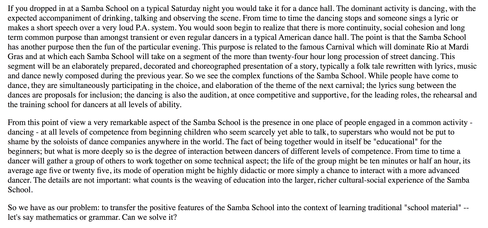

PBL & Identity Expression
Spring 2021
How do we start with young people and what they care about insted of specific content to do great projects that build relationships, skills, and self-efficcacy
Step 1: Pick a truly generative medium or theme that enables divergence
- Movie making (e.g. adaptations, stories about yourself that other people dont see)
- Programming
- Audio Storytelling
Step 2. Notice what they're into and authentically center it & connect it to what you're doing.
Story of Edgar's Trebuchet
Principle: All interests are useful
Context: Moving Machines in a math class

Step 3. Notice who they are into.
Story of Stephanya's Films
Principle: Sometimes it's useful to build trust with people by putting them with friends and if they're "too cool for school" — connect them with something that's intrinsically awesome and ready to go.
Context: Moving Machines / Adaptations in a English Class
The early days & hot glue.
Project: Drawing Machine
Once you've built trust & confidence...
The power of going (literally) right outside school and buying costumes for $2 at goodwill
Qualities of Great Projects
- It's real (i.e. Public Audience) & real tools/materials
- It's personally meaningful (i.e. It matters to you.)
- Maker designs it and chooses it
- It's dope.
- It's connected to a big idea
How can educators DESIGN units or environments that enable this kind of divergence & also allow for collaboration?
What I'm working on now
e.g. cs1
- Started by doing own project
- Find a North Star: Jennifer Dewalt
- Made my own example Mojopi.github.io
- Find a real audience (I like to make presents for people I love) e.g. Moon Present
- Document work (e.g. personal websites )
- Generalize personal experience to design workflows and experiences for kids that allow them to brainstorm, design, execute, and document their work e.g. CS1 and Tara's website
Bottom line: It's exciting to design learning experiences by starting with humans rather than content/information transmission per se
It has made me think more about creating learning environments rather than classes.
Samba School vs. School
